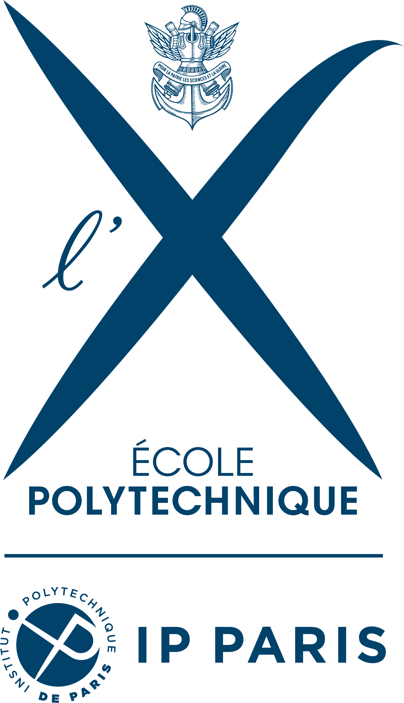
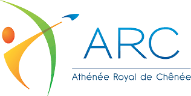

Jan to Mar 2026

Tutorial Leader
Socio-emotional Embodied Conversational Agents (CSC_54442_EP), a master-level course: 2 ECTS, 12h lectures, 12h practicals, 17 students enrolled.
Teaching has been central to my academic life, from university lecture halls in statistics, mathematics, and analytics to secondary-school classrooms and graduate seminars on conversational agents. I have taught in French and in English, across bachelor, master, and continuing-education levels.

Socio-emotional Embodied Conversational Agents (CSC_54442_EP), a master-level course: 2 ECTS, 12h lectures, 12h practicals, 17 students enrolled.


Secondary-school mathematics teaching (Chênée, September 2018; Herstal, August 2019).
Mathematics remediation for second-year bachelor students.